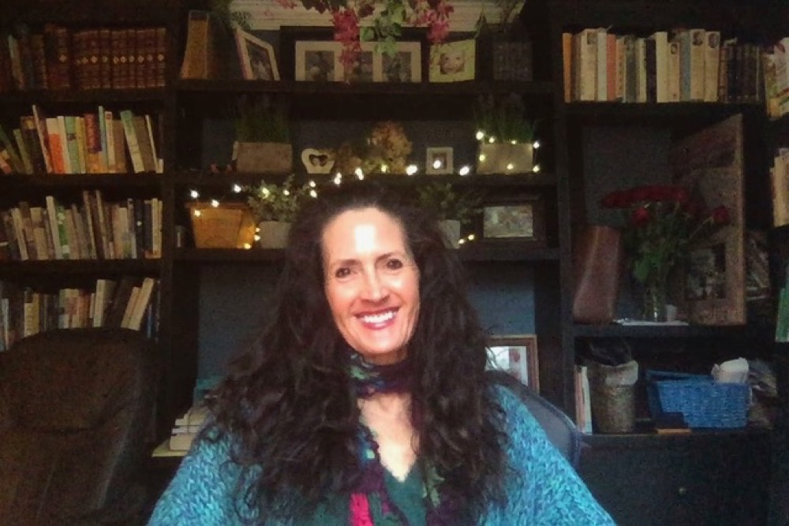

Kristin Bryant Rajan
Writer
Poetry, Creative Nonfiction, Fiction, and Literary Criticism
Teacher
Writing, Literature, Wellness Workshops, Spin!
Bio

Kristin Bryant Rajan, PhD in English, writes poetry, fiction, creative nonfiction, and literary criticism in Atlanta, GA and is widely published in creative writing journals and anthologies as well as literary and academic journals and books. Her writing—academic and creative—and her teaching revolve around illuminating paths to healing and evolution embedded in our daily lives, the literature we read, and the works we create. She firmly believes that deep awareness leads to self-actualization, peace, and contentment.
Her creative work illuminates moments of beauty, pain, growth, and humor. She believes that compassion and healing grow from understanding, and writing is a way to understand. Her writing blends genres: Her poems and essays tell stories, and her prose is imbued with poetry. She is a Pushcart and Best of the Net nominee. Her poetry collection, Shadows, will be available February 2024.
Her criticism, addressed to a broad audience, investigates the ways literature helps us evolve to our highest selves. Her articles inspect Buddhism and meditative moments of deep self in modernist literature, particularly the works of Virginia Woolf. She has written on the role of nature, fashion, and social media as they apply to identity and literature. Through literary analyses, she explores racism and disconnection, revealing themes of unity and peace beneath attachment and delusion. Her criticism highlights the role of performance and external representations of selfhood and recognizes a deeper, flowing, nourishing selfhood beneath the surface. Ultimately, her research highlights paths to peace, wellbeing, and connection reflected in careful attention to detail within literature and our lives.
She teaches English as a Senior Lecturer at Kennesaw State University from the perspective that writing and literature can not only enrich but can save our lives. Students entangled in webs of social media, politics, and climate change concerns often find empowerment and paths to contentment in her classes, commenting that her courses are “life-changing” and teach the “whole person.”
She also enjoys teaching Spin classes at the Decatur YMCA, playing carefully curated music loudly, mixing cardio and humor, with the firm belief that laughing and connection are as healing as high intensity interval training.
Her writing, research, teaching, and life are coalescing in exciting ways, and she’s excited to share the abundant gifts in the present (get it?).